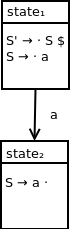

RIPAL: Responsive and Intuitive Parsing for the Analysis of Language
Pages
LR(0) single-terminal state machine
Background
We've seen the LR(0) DFA construction process for a grammar that derives the empty string ε.
In this section, we will illustrate how this process works for a grammar that derives a string with a single terminal.
Our grammar
The language we will be analyzing is specified by the following grammar:
S → a
This grammar has the following augmented grammar:
S' → S
S → a
Our parse table
This grammar has the following LR(0) parse table:
a
$
S
S'
state1
shift2
goto3
state2
reduce1
reduce1
state3
accept
Parsing input string a:
Input queue
Parse stack
Action
a
1
Apply action of shift2 which corresponds to state1 and a in our parse table
1 a 2
Apply action of reduce2 which corresponds to state2 and $ in our parse table
1 S
Apply action of goto3 which corresponds to state1 and S in our parse table
1 S 3
Accept, since this action corresponds to state3 and $ in our parse table
This parsing procedure corresponds to the following derivation of string a:
S
→ a
Initial state
Like in the previous example, we start our closure calculation by adding a dot to the beginning of the right-hand size of our initial production rule.
The qualified closure production set:
{S' → · S $}
is:
{S' → · S $, S → · a}
We can't move any farther in our closure calculation since we've hit a dead end with the terminal a. Advancing would require the processing of the input symbol a.
We can visualize our initial parse state as:
Handling terminal a
Observe the following sequence of parse stack states encountered in the parsing example above:
1
1 a 2
1 S
In this sequence of events we shift into state2, pushing input symbol a onto the parse stack.
In state2, we have already processed the terminal a which is found in production S → a.
As a result, we use the qualified production:
S → a ·
to start the construction of state2. Here, our initial qualified production set is:
{S → a ·}
Because our · symbol does not appear in front of a nonterminal symbol, we can't expand this set any more. This second parse state can be visualized as:
Since we shift from state1 to state2 when pushing input symbol a onto the parse stack, we create a transition in this direction as follows:

Note that there is no transition out of state2. Observe the following sequence of parse stack states:
1 a 2
1 S
When we reduce terminal a to nonterminal S, we pop state2 off the stack. Instead of representing this as a state transition in our diagram, we simply return to the previous parse state.
Handling end of string
After the reduce action, from state1, we want to process the end of string so that we can accept the fixed string a as part of our language.
Similar to in our last DFA construction example, we need to add a transition corresponding to our goto after our reduction and also a subsequent final accepting state. The resulting diagram is:
Conclusion
We've seen the LR(0) DFA construction process for a grammar that derives a single-terminal string.
Next, we will extend this process to handle multiple terminal symbols.
![DFA containing four states. State 1 contains the following productions: S prime produces dot S $, S produces dot a. State 2 contains the following production: S prime produces S a dot. State 1 transitions to state 2 on terminal symbol a. State 3 contains the following production: S prime produces S dot $. State 1 transitions to state 3 on nonterminal symbol S. State 4 contains the following production: S prime produces S $ dot. State 3 transitions to state 4 on end of string symbol $. State 4 is an accepting state.](assets/singleterminaldfa4parsestates.png)